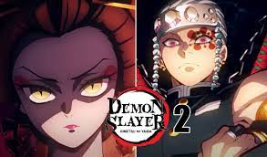
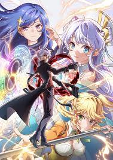

Que ver este otoño
Terminada la temporada de verano, aquí te mostraremos una serie de animes obligatorios que tienes que seguir esta temporada de otoño para los más "Animefilos"
A continuación te mostraremos un par de animes con sus enlaces para que descubras más de estos
Kimetsu no yaiba temporada 2
Para todos los que disfrutasteís la primera temporada de esta gran serie, este otoño el estudio Ufotable nos sorprenderá de nuevo con la animación de esta gran serie de samurais mata demonios acompañando a tanjiro kamado en sus aventuras.
si quieres conocer más de este anime pincha el siguiente enlace para conocer más
KIMETSU NO YAIBA
Isekai kizoku ni Tensei suru
El siguiente anime nos presenta, aunque suene raro algo novedoso dentro de lo tipico, siguiendo la temática de los isekais que para los pocos conocedores de este género es un genero en el cual el protagonista tras morir en su mundo actual revive en otro que suelen ser en su mayoría de fantasía, pues bien este anime sigue esta temática con la diferencia el protagonista no será el héroe esperado del otro mundo, si no, que por ciertas circunstancias será el encargado de asesinar al héroe de este nuevo mundo.
si quieres conocer más de este anime pincha el siguiente enlace para conocer más
ISEKAI KIZOKU NI TENSEI
Animes que nos recomendais
En el siguiente formulario queremos que nos envieis animes que os gustaría que analizasemos y recomendasemos a otros usuarios.